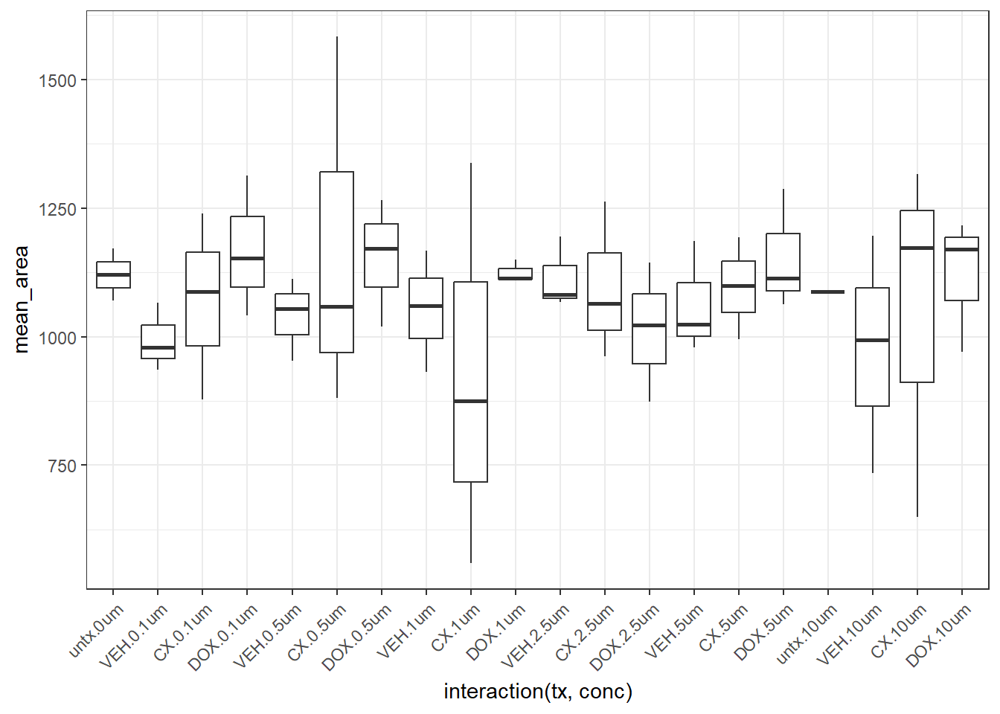

Image_processing
Renee Matthews
2025-11-11
Last updated: 2025-11-11
Checks: 7 0
Knit directory: CX_revison/
This reproducible R Markdown analysis was created with workflowr (version 1.7.1). The Checks tab describes the reproducibility checks that were applied when the results were created. The Past versions tab lists the development history.
Great! Since the R Markdown file has been committed to the Git repository, you know the exact version of the code that produced these results.
Great job! The global environment was empty. Objects defined in the global environment can affect the analysis in your R Markdown file in unknown ways. For reproduciblity it’s best to always run the code in an empty environment.
The command set.seed(20251031) was run prior to running
the code in the R Markdown file. Setting a seed ensures that any results
that rely on randomness, e.g. subsampling or permutations, are
reproducible.
Great job! Recording the operating system, R version, and package versions is critical for reproducibility.
Nice! There were no cached chunks for this analysis, so you can be confident that you successfully produced the results during this run.
Great job! Using relative paths to the files within your workflowr project makes it easier to run your code on other machines.
Great! You are using Git for version control. Tracking code development and connecting the code version to the results is critical for reproducibility.
The results in this page were generated with repository version f33d521. See the Past versions tab to see a history of the changes made to the R Markdown and HTML files.
Note that you need to be careful to ensure that all relevant files for
the analysis have been committed to Git prior to generating the results
(you can use wflow_publish or
wflow_git_commit). workflowr only checks the R Markdown
file, but you know if there are other scripts or data files that it
depends on. Below is the status of the Git repository when the results
were generated:
Ignored files:
Ignored: .RData
Ignored: .Rhistory
Ignored: .Rproj.user/
Unstaged changes:
Modified: CX_revison.Rproj
Note that any generated files, e.g. HTML, png, CSS, etc., are not included in this status report because it is ok for generated content to have uncommitted changes.
These are the previous versions of the repository in which changes were
made to the R Markdown (analysis/Image_processing.Rmd) and
HTML (docs/Image_processing.html) files. If you’ve
configured a remote Git repository (see ?wflow_git_remote),
click on the hyperlinks in the table below to view the files as they
were in that past version.
| File | Version | Author | Date | Message |
|---|---|---|---|---|
| Rmd | f33d521 | reneeisnowhere | 2025-11-11 | adding concentration range |
| html | 2a11490 | reneeisnowhere | 2025-11-11 | Build site. |
| Rmd | b5e160e | reneeisnowhere | 2025-11-11 | update to macros |
| html | 0e3cb00 | reneeisnowhere | 2025-11-10 | Build site. |
| Rmd | 8799992 | reneeisnowhere | 2025-11-10 | wflow_publish("analysis/Image_processing.Rmd") |
| html | 2b057e8 | reneeisnowhere | 2025-11-10 | Build site. |
| Rmd | a162dcc | reneeisnowhere | 2025-11-10 | first commits |
library(tidyverse)
library(readxl)
library(readr)results_path_75 <- "C:/Users/renee/Other_projects_data/CX_revision_data/Images_Evos/24hour_JAG/75-1/DAPI_area"
results_path_78 <- "C:/Users/renee/Other_projects_data/CX_revision_data/Images_Evos/24hour_JAG/78-1/DAPI_area"
results_path_87 <- "C:/Users/renee/Other_projects_data/CX_revision_data/Images_Evos/24hour_JAG/87-1/DAPI_area"
# List all .csv files
files <- list.files(results_path_75, pattern = "\\.csv$", full.names = TRUE)
# Read each file and extract average area
area_summary <- files %>%
lapply(function(f) {
df <- read_csv(f, show_col_types = FALSE)
# Make sure the column name matches "Area" (case-sensitive)
avg_area <- mean(df$Area, na.rm = TRUE)
data.frame(
File = basename(f),
Average_Area = avg_area
)
}) %>%
bind_rows()
# View combined summary
print(area_summary) File Average_Area
1 DAPI_area_0-1um_75_CX_C_DAPI_0001.csv 1143.5612
2 DAPI_area_0-1um_75_CX_C_DAPI_0002.csv 1336.0571
3 DAPI_area_0-1um_75_DOX_C_DAPI_0001.csv 1327.1429
4 DAPI_area_0-1um_75_DOX_C_DAPI_0002.csv 1239.6190
5 DAPI_area_0-1um_75_DOX_C_DAPI_0003.csv 1374.0360
6 DAPI_area_0-1um_75_VEH_C_DAPI_0001.csv 1201.6392
7 DAPI_area_0-1um_75_VEH_C_DAPI_0002.csv 1032.5979
8 DAPI_area_0-1um_75_VEH_C_DAPI_0003.csv 963.0517
9 DAPI_area_0-5um_75_CX_C_DAPI_0001.csv 1426.5926
10 DAPI_area_0-5um_75_CX_C_DAPI_0002.csv 1490.1373
11 DAPI_area_0-5um_75_CX_C_DAPI_0003.csv 1830.9167
12 DAPI_area_0-5um_75_DOX_C_DAPI_0001.csv 1365.8750
13 DAPI_area_0-5um_75_DOX_C_DAPI_0002.csv 1315.8571
14 DAPI_area_0-5um_75_DOX_C_DAPI_0003.csv 1315.8571
15 DAPI_area_0-5um_75_DOX_C_DAPI_0004.csv 1163.0769
16 DAPI_area_0-5um_75_DOX_C_DAPI_0005.csv 1163.0769
17 DAPI_area_0-5um_75_VEH_C_DAPI_0001.csv 1144.6503
18 DAPI_area_0-5um_75_VEH_C_DAPI_0002.csv 1039.9371
19 DAPI_area_0-5um_75_VEH_C_DAPI_0003.csv 1153.5325
20 DAPI_area_0um_75_untx_C_DAPI_0001.csv 1212.7891
21 DAPI_area_0um_75_untx_C_DAPI_0002.csv 1129.8219
22 DAPI_area_10um_75_CX_C_DAPI_0001.csv 1095.2857
23 DAPI_area_10um_75_CX_C_DAPI_0002.csv 1536.7805
24 DAPI_area_10um_75_DOX_C_DAPI_0001.csv 1009.3670
25 DAPI_area_10um_75_DOX_C_DAPI_0002.csv 1122.8623
26 DAPI_area_10um_75_DOX_C_DAPI_0003.csv 1122.8623
27 DAPI_area_10um_75_DOX_C_DAPI_0004.csv 1424.0286
28 DAPI_area_10um_75_VEH_C_DAPI_0001.csv 502.8696
29 DAPI_area_10um_75_VEH_C_DAPI_0002.csv 703.8261
30 DAPI_area_10um_75_VEH_C_DAPI_0003.csv 999.3478
31 DAPI_area_1um_75_CX_C_DAPI_0001.csv 1273.8204
32 DAPI_area_1um_75_CX_C_DAPI_0002.csv 1499.1132
33 DAPI_area_1um_75_CX_C_DAPI_0003.csv 1240.3191
34 DAPI_area_1um_75_DOX_C_DAPI_0001.csv 1068.9192
35 DAPI_area_1um_75_DOX_C_DAPI_0002.csv 1231.3333
36 DAPI_area_1um_75_VEH_C_DAPI_0001.csv 1115.3431
37 DAPI_area_1um_75_VEH_C_DAPI_0002.csv 1181.5657
38 DAPI_area_1um_75_VEH_C_DAPI_0003.csv 1203.2521
39 DAPI_area_2-5um_75_CX_C_DAPI_0001.csv 1262.1728
40 DAPI_area_2-5um_75_CX_C_DAPI_0002.csv 1262.2361
41 DAPI_area_2-5um_75_DOX_C_DAPI_0001.csv 1162.8841
42 DAPI_area_2-5um_75_DOX_C_DAPI_0002.csv 825.3568
43 DAPI_area_2-5um_75_DOX_C_DAPI_0003.csv 1077.3855
44 DAPI_area_2-5um_75_VEH_C_DAPI_0001.csv 1192.7391
45 DAPI_area_2-5um_75_VEH_C_DAPI_0002.csv 1192.7391
46 DAPI_area_2-5um_75_VEH_C_DAPI_0003.csv 1197.6429
47 DAPI_area_5um_75_CX_C_DAPI_0001.csv 1165.7000
48 DAPI_area_5um_75_CX_C_DAPI_0002.csv 1293.9600
49 DAPI_area_5um_75_CX_C_DAPI_0003.csv 1120.0978
50 DAPI_area_5um_75_DOX_C_DAPI_0001.csv 942.8281
51 DAPI_area_5um_75_DOX_C_DAPI_0002.csv 1463.8760
52 DAPI_area_5um_75_DOX_C_DAPI_0003.csv 1455.4362
53 DAPI_area_5um_75_VEH_C_DAPI_0001.csv 1258.3939
54 DAPI_area_5um_75_VEH_C_DAPI_0002.csv 1294.8911
55 DAPI_area_5um_75_VEH_C_DAPI_0003.csv 1001.9767get_avg_area_summary <- function(results_path = "Results/", save_csv = TRUE) {
# List all CSV files in the directory
files <- list.files(results_path, pattern = "\\.csv$", full.names = TRUE)
if (length(files) == 0) {
stop("No CSV files found in the specified directory.")
}
# Read each file and calculate summary stats
area_summary <- files %>%
lapply(function(f) {
df <- read_csv(f, show_col_types = FALSE)
# Ensure "Area" column exists
if (!"Area" %in% names(df)) {
warning(paste("File", basename(f), "does not contain an 'Area' column. Skipping."))
return(NULL)
}
data.frame(
File = basename(f),
Average_Area = mean(df$Area, na.rm = TRUE),
Median_Area = median(df$Area, na.rm = TRUE),
SD_Area = sd(df$Area, na.rm = TRUE),
Count = sum(!is.na(df$Area))
)
}) %>%
bind_rows()
# # Optional save
# if (save_csv) {
# out_file <- file.path(results_path, "Average_Area_Summary.csv")
# write_csv(area_summary, out_file)
# message("Summary saved to: ", out_file)
# }
# Return summary and overall average
overall_avg <- mean(area_summary$Average_Area, na.rm = TRUE)
message("Overall average nuclear area: ", round(overall_avg, 2))
return(area_summary)
}area_summary_75 <- get_avg_area_summary(results_path = results_path_75)
area_summary_87 <-get_avg_area_summary(results_path = results_path_87)
area_summary_78 <-get_avg_area_summary(results_path = results_path_78)
combo_area <-
area_summary_75 %>%
bind_rows(area_summary_78) %>%
bind_rows(area_summary_87) %>%
separate(File, into = c("1","2","conc","ind","tx","view","4","5"), sep = "_") %>%
mutate(conc=str_replace(conc, pattern="-",replacement="."),
`5`=str_replace(`5`,pattern="\\.csv","")) %>%
group_by(ind,conc,tx) %>%
summarize(mean_area=mean(Average_Area, na.rm = TRUE), .groups = "drop") %>%
mutate(tx=factor(tx, levels=c("untx","VEH","CX","DOX")),
conc= factor(conc, levels=c("0um","0.1um","0.5um","1um","2.5um","5um","10um"))) %>%
na.omit()ggplot(combo_area, aes(x=interaction(tx,conc),y=mean_area))+
geom_boxplot()+
theme_bw()+
theme(axis.text.x=element_text(angle=45, hjust=1))
| Version | Author | Date |
|---|---|---|
| 2b057e8 | reneeisnowhere | 2025-11-10 |
kruskal.test(mean_area ~ interaction(tx, conc), data = combo_area)
Kruskal-Wallis rank sum test
data: mean_area by interaction(tx, conc)
Kruskal-Wallis chi-squared = 8.9607, df = 19, p-value = 0.9741No significant difference between area of nuclei and the interaction of tx and concentration using Kruskal-Wallis test.
adding in positive nuclei counts:
script for identifying nuclei
// === STEP 1: Open first .tif image from the folder ===
folder = "C:\\userfolders\\Images_EVOS\\If_cardiotox\\87-1 images\\C_DAPI\\";
saveRoiFolder = "C:\\userfolders\\Images_EVOS\\If_cardiotox\\87-1 images\\outline\\";
list = getFileList(folder);
for (i = 0; i < list.length; i++) {
if (endsWith(list[i], ".tif")) {
// Open image
open(folder + list[i]);
originalTitle = getTitle();
// === STEP 2: Duplicate and close original ===
baseName = replace(getTitle(), ".tif", ""); // removes .tif extension
newTitle = baseName; // or whatever matches your naming
run("Duplicate...", "title=" + newTitle);
dupTitle = getTitle(); // duplicated image becomes active
selectImage(originalTitle);
close();
// === STEP 3: Process duplicated image ===
selectImage(dupTitle);
run("8-bit");
setAutoThreshold("Otsu dark");
setOption("BlackBackground", true);
run("Convert to Mask");
run("Watershed");
// === STEP 4: Analyze particles ===
run("Analyze Particles...", "size=21-Infinity circularity=0.30-1.00 show=[Count Masks] display exclude summarize add");
// === STEP 5: Save ROIs ===
roiManager("Select", 0); // Avoid saving empty ROI manager
saveName = replace(dupTitle, ".tif", "") + ".zip";
roiManager("Save", saveRoiFolder + saveName);
// Cleanup (optional)
close();
maskTitle = "Count Masks of " + dupTitle;
if (isOpen(maskTitle)) {
selectImage(maskTitle);
close();
}
roiManager("Deselect");
roiManager("Reset");
// break; // Remove this line if you want to process all images in the folder
}
}script for counting posive nuclei
// === USER SETTINGS ===
roiFolder = "C:\\userfolders\\Images_EVOS\\If_cardiotox\\87-1 images\\outline\\";
txredFolder = "C:\\userfolders\\Images_EVOS\\If_cardiotox\\87-1 images\\C_TxRed\\";
outputFolder = "C:\\userfolders\\Images_EVOS\\If_cardiotox\\87-1 images\\DAPI_counts\\";
signalThreshold = 5; // define what counts as a "positive signal"
// === GET ROI FILES ===
roiFiles = getFileList(roiFolder);
// Before the loop, open/create summary file
masterFile = outputFolder + "Master_summary.csv";
// Write header (run once, before loop)
if (File.exists(masterFile)) File.delete(masterFile);
File.append("Sample,Total_ROIs,Positive_ROIs\n", masterFile);
// === LOOP OVER EACH ROI FILE ===
for (i = 0; i < roiFiles.length; i++) {
roiFile = roiFiles[i];
// Only process .zip ROI files
if (!endsWith(roiFile, ".zip")) continue;
// Remove suffixes more precisely
baseName = replace(roiFile, ".zip", ""); // e.g. "3h_87_DOX_B_DAPI_0004"
// === Build full filenames ===
roiPath = roiFolder + roiFile;
txredImage = replace(baseName, "_DAPI_", "_TxRed_") + ".tif";
txredPath = txredFolder + txredImage;
outputCSV = outputFolder + "Cell_intensity_" + baseName + ".csv";
// === Check if TxRed image exists ===
if (!File.exists(txredPath)) {
print("Skipping: TxRed image not found for", baseName);
continue;
}
// === Open image ===
open(txredPath);
imageTitle = getTitle();
// === Load ROI file ===
roiManager("Reset");
roiManager("Open", roiPath);
roiManager("Show None");
roiManager("Show All");
// Prepare image but KEEP original intensities for measurement
run("8-bit");
setAutoThreshold("Otsu dark");
getThreshold(lower, upper);
minThreshold = 3;
if (lower < minThreshold) lower = minThreshold;
setThreshold(lower, 255);
// Optional: create a mask only for visualization (do not measure on it)
// run("Convert to Mask");
// === Measure signal in ROIs ===
run("Set Measurements...", "area mean min redirect=[" + imageTitle + "] decimal=3");
roiCount = roiManager("Count");
if (roiCount == 0) {
print("No ROIs in", roiFile);
close();
continue;
}
roiIndexes = newArray(roiCount);
for (j = 0; j < roiCount; j++) roiIndexes[j] = j;
selectImage(imageTitle);
roiManager("Select", roiIndexes);
roiManager("Measure");
// === Count ROIs with mean > threshold ===
positiveCount = 0;
for (j = 0; j < roiCount; j++) {
value = getResult("Mean", j);
if (value > signalThreshold) {
positiveCount++;
}
}
// === Optional quality control: flag unexpectedly low or high counts ===
minPos = 15;
maxPos = 16;
if (positiveCount < minPos || positiveCount > maxPos) {
print("⚠️ WARNING: Sample", baseName, "has", positiveCount, "positive ROIs (expected between", minPos, "and", maxPos, ")");
selectImage(imageTitle);
roiManager("Show All");
waitForUser("Inspect and adjust this sample manually if needed.\nWhen done, click OK to re-measure and continue.");
// Reapply measurement settings after manual changes
run("Clear Results");
run("Set Measurements...", "area mean min redirect=[" + imageTitle + "] decimal=3");
// Make sure the same image is selected and ROIs are active
selectImage(imageTitle);
roiCount = roiManager("Count");
roiIndexes = newArray(roiCount);
for (j = 0; j < roiCount; j++) roiIndexes[j] = j;
roiManager("Select", roiIndexes);
roiManager("Measure");
// Reapply measurement settings after manual changes
run("Clear Results");
run("Set Measurements...", "area mean min redirect=[" + imageTitle + "] decimal=3");
// Make sure the same image is selected and ROIs are active
selectImage(imageTitle);
roiCount = roiManager("Count");
roiIndexes = newArray(roiCount);
for (j = 0; j < roiCount; j++) roiIndexes[j] = j;
roiManager("Select", roiIndexes);
roiManager("Measure");
// Recount positives using new mean values
positiveCount = 0;
for (j = 0; j < roiCount; j++) {
value = getResult("Mean", j);
if (value > signalThreshold) positiveCount++;
}
print("✅ After manual adjustment:", positiveCount, "positive ROIs");
}
// === Save Results table ===
saveAs("Results", outputCSV);
// Inside your processing loop, after counting positives:
line = baseName + "," + roiCount + "," + positiveCount + "\n";
File.append(line, masterFile);
// === Optional: Print summary to log ===
print(baseName, ": ", positiveCount, "/", roiCount, " ROIs positive (>", signalThreshold, ")");
// === Cleanup ===
close(); // Close TxRed image
roiManager("Reset");
run("Clear Results");
}loading files for positive nuclei
Nuclei_gamma_count_75<- read_delim("C:/Users/renee/Other_projects_data/CX_revision_data/Images_Evos/3-24-48_ERM/75-1/DAPI_counts/Master_summary_75_final_1.csv") %>% na.omit()
Nuclei_gamma_count_78<- read_delim("C:/Users/renee/Other_projects_data/CX_revision_data/Images_Evos/3-24-48_ERM/78-1/DAPI_counts/Master_summary_78_final_1.csv") %>% na.omit()
Nuclei_gamma_count_87<- read_delim("C:/Users/renee/Other_projects_data/CX_revision_data/Images_Evos/3-24-48_ERM/87-1/DAPI_counts/Master_summary_87_final_1.csv") %>% na.omit()
Ind_75_table <- Nuclei_gamma_count_75 %>%
separate(Sample, into= c("time","conc","ind","tx", "focus","DAPI","number"), sep="_") %>%
mutate(percent_pos= Positive_ROIs/Total_ROIs * 100,
time=factor(time, levels=c("T3","T24","T48"))) %>%
dplyr::filter(tx != "untx") %>%
dplyr::filter(tx != "2nd") %>%
group_by(tx,time, conc) %>%
mutate(group_number = rep(c("A","B"), length.out = n())) %>%
ungroup() %>%
dplyr::select(time:tx,percent_pos,group_number) %>%
pivot_wider(., id_cols=c(time, conc,ind,tx), names_from = group_number, values_from = percent_pos) %>%
rowwise() %>%
mutate(total = round(mean(c_across(c(A, B)), na.rm = TRUE), digits = 1))
Ind_87_table <- Nuclei_gamma_count_87 %>%
separate(Sample, into= c("time","conc","ind","tx", "focus","DAPI","number"), sep="_") %>%
mutate(percent_pos= Positive_ROIs/Total_ROIs * 100,
time=factor(time, levels=c("T3","T24","T48"))) %>%
dplyr::filter(tx != "untx") %>%
dplyr::filter(tx != "2nd") %>%
group_by(tx,time, conc) %>%
mutate(group_number = rep(c("A","B"), length.out = n())) %>%
ungroup() %>%
dplyr::select(time:tx,percent_pos,group_number) %>%
pivot_wider(., id_cols=c(time, conc,ind,tx), names_from = group_number, values_from = percent_pos) %>%
rowwise() %>%
mutate(total = round(mean(c_across(c(A, B)), na.rm = TRUE), digits = 1))
Ind_78_table <- Nuclei_gamma_count_78 %>%
separate(Sample, into= c("time","conc","ind","tx", "focus","DAPI","number"), sep="_") %>%
mutate(percent_pos= Positive_ROIs/Total_ROIs * 100,
time=factor(time, levels=c("T3","T24","T48"))) %>%
dplyr::filter(tx != "untx") %>%
dplyr::filter(tx != "2nd") %>%
dplyr::filter(ind !="untx") %>%
group_by(tx,time, conc) %>%
mutate(group_number = rep(c("A","B"), length.out = n())) %>%
ungroup() %>%
dplyr::select(time:tx,percent_pos,group_number) %>%
pivot_wider(., id_cols=c(time, conc,ind,tx), names_from = group_number, values_from = percent_pos) %>%
rowwise() %>%
mutate(total = round(mean(c_across(c(A, B)), na.rm = TRUE), digits = 1)) combined_if_table <- bind_rows(Ind_78_table,Ind_87_table) %>%
bind_rows(., Ind_75_table) %>%
mutate(conc=str_replace(conc, pattern="-",replacement=".")) %>%
mutate(time=factor(time, levels=c("T3","T24","T48")),
tx=factor(tx, levels= c("VEH","CX","DOX")),
conc=factor(conc, levels = c("0.1um","0.5um","2.5um"))) %>%
mutate(grouping=paste0(tx,"_",time)) %>%
mutate(grouping=factor(grouping,levels=c("VEH_T3","CX_T3","DOX_T3",
"VEH_T24","CX_T24","DOX_T24",
"VEH_T48","CX_T48","DOX_T48")))
combined_if_table %>%
dplyr::filter(conc=="2.5um") %>%
ggplot(., aes(x=grouping,y=total))+
geom_boxplot()+
geom_point(aes(color=ind,size=5))+
ggsignif:: geom_signif(comparisons = list(
c("VEH_T3", "DOX_T3"),
c("VEH_T3", "CX_T3"),
c("VEH_T24", "DOX_T24"),
c("VEH_T24", "CX_T24"),
c("VEH_T48", "DOX_T48"),
c("VEH_T48", "CX_T48")),
step_increase = 0.1,
map_signif_level = FALSE,
test = "t.test")+
theme_bw()+
ggtitle("2.5 uM at T3, T24, T48")
combined_if_table %>%
dplyr::filter(conc!="2.5um") %>%
ggplot(., aes(x=grouping,y=total))+
geom_boxplot()+
geom_point(aes(color=ind,size=5))+
ggsignif:: geom_signif(comparisons = list(
c("VEH_T3", "DOX_T3"),
c("VEH_T3", "CX_T3"),
c("VEH_T24", "DOX_T24"),
c("VEH_T24", "CX_T24"),
c("VEH_T48", "DOX_T48"),
c("VEH_T48", "CX_T48")),
step_increase = 0.1,
map_signif_level = FALSE,
test = "t.test")+
theme_bw()+
facet_wrap(~conc)+
ggtitle("0.1um and 0.5 uM at T3, T24, T48")+
theme(axis.text.x=element_text(angle=45,hjust=1))
# write_csv(combined_if_table, "data/IF_table_combined_T3_T24_T48_gamma.csv")gamma_count_75<- read_delim("C:/Users/renee/Other_projects_data/CX_revision_data/Images_Evos/24hour_JAG/75-1/DAPI_counts/Master_summary_75_final.csv") %>% na.omit()
gamma_count_78<- read_delim("C:/Users/renee/Other_projects_data/CX_revision_data/Images_Evos/24hour_JAG/78-1/DAPI_counts/Master_summary_78_final.csv") %>% na.omit()
gamma_count_87<- read_delim("C:/Users/renee/Other_projects_data/CX_revision_data/Images_Evos/24hour_JAG/87-1/DAPI_counts/Master_summary_87_final.csv") %>% na.omit()
n75_table <- gamma_count_75 %>%
separate(Sample, into= c("conc","ind","tx", "focus","DAPI","number"), sep="_") %>%
mutate(percent_pos= Positive_ROIs/Total_ROIs * 100) %>%
dplyr::filter(tx != "untx") %>%
dplyr::filter(tx != "2nd") %>%
group_by(tx, conc) %>%
mutate(group_number = rep(c("A","B"), length.out = n())) %>%
ungroup() %>%
dplyr::select(conc:tx,percent_pos,group_number) %>%
pivot_wider(., id_cols=c(conc,ind,tx), names_from = group_number, values_from = percent_pos) %>%
rowwise() %>%
mutate(conc=str_replace(conc, pattern="-",replacement=".")) %>%
mutate(total = round(mean(c_across(c(A, B)), na.rm = TRUE), digits = 1))
n87_table <- gamma_count_87 %>%
separate(Sample, into= c("conc","ind","tx", "focus","DAPI","number"), sep="_") %>%
mutate(percent_pos= Positive_ROIs/Total_ROIs * 100) %>%
dplyr::filter(tx != "untx") %>%
dplyr::filter(tx != "2nddox") %>%
group_by(tx, conc) %>%
mutate(group_number = rep(c("A","B"), length.out = n())) %>%
ungroup() %>%
dplyr::select(conc:tx,percent_pos,group_number) %>%
pivot_wider(., id_cols=c(conc,ind,tx), names_from = group_number, values_from = percent_pos) %>%
rowwise() %>%
mutate(conc=str_replace(conc, pattern="-",replacement=".")) %>%
mutate(total = round(mean(c_across(c(A, B)), na.rm = TRUE), digits = 1))
n78_table <- gamma_count_78 %>%
separate(Sample, into= c("conc","ind","tx", "focus","DAPI","number"), sep="_") %>%
mutate(percent_pos= Positive_ROIs/Total_ROIs * 100) %>%
dplyr::filter(tx != "untx") %>%
dplyr::filter(tx != "2nd") %>%
group_by(tx, conc) %>%
mutate(group_number = rep(c("A","B"), length.out = n())) %>%
ungroup() %>%
dplyr::select(conc:tx,percent_pos,group_number) %>%
pivot_wider(., id_cols=c(conc,ind,tx), names_from = group_number, values_from = percent_pos) %>%
rowwise() %>%
mutate(conc=str_replace(conc, pattern="-",replacement=".")) %>%
mutate(total = round(mean(c_across(c(A, B)), na.rm = TRUE), digits = 1))combined_doserange_table <- bind_rows(n78_table,n87_table) %>%
bind_rows(., n75_table) %>%
mutate(tx=factor(tx, levels= c("VEH","CX","DOX")),
conc=factor(conc, levels = c("0.1um","0.5um","1um","2.5um", "5um","10um"))) %>%
mutate(grouping=paste0(tx,"_",conc)) %>%
mutate(grouping=factor(grouping,levels=c("VEH_0.1um","CX_0.1um","DOX_0.1um",
"VEH_0.5um","CX_0.5um","DOX_0.5um",
"VEH_1um","CX_1um","DOX_1um",
"VEH_2.5um","CX_2.5um","DOX_2.5um",
"VEH_5um","CX_5um","DOX_5um",
"VEH_10um","CX_10um","DOX_10um")))combined_doserange_table %>%
# dplyr::filter(conc=="2.5um") %>%
ggplot(., aes(x=grouping,y=total))+
geom_boxplot()+
geom_point(aes(color=ind,size=5))+
ggsignif:: geom_signif(comparisons = list(
c("VEH_0.1um", "CX_0.1um"),
c("VEH_0.1um", "DOX_0.1um"),
c("VEH_0.5um", "CX_0.5um"),
c("VEH_0.5um", "DOX_0.5um"),
c("VEH_1um", "CX_1um"),
c("VEH_1um", "DOX_1um"),
c("VEH_2.5um", "CX_2.5um"),
c("VEH_2.5um", "DOX_2.5um"),
c("VEH_5um", "CX_5um"),
c("VEH_5um", "DOX_5um"),
c("VEH_10um", "CX_10um"),
c("VEH_10um", "DOX_10um")),
step_increase = 0.1,
map_signif_level = FALSE,
test = "t.test")+
theme_bw()+
ggtitle("Concentration range")+
theme(axis.text.x=element_text(angle=45,hjust=1))
sessionInfo()R version 4.4.2 (2024-10-31 ucrt)
Platform: x86_64-w64-mingw32/x64
Running under: Windows 11 x64 (build 26100)
Matrix products: default
locale:
[1] LC_COLLATE=English_United States.utf8
[2] LC_CTYPE=English_United States.utf8
[3] LC_MONETARY=English_United States.utf8
[4] LC_NUMERIC=C
[5] LC_TIME=English_United States.utf8
time zone: America/Chicago
tzcode source: internal
attached base packages:
[1] stats graphics grDevices utils datasets methods base
other attached packages:
[1] readxl_1.4.5 lubridate_1.9.4 forcats_1.0.0 stringr_1.5.1
[5] dplyr_1.1.4 purrr_1.1.0 readr_2.1.5 tidyr_1.3.1
[9] tibble_3.3.0 ggplot2_3.5.2 tidyverse_2.0.0 workflowr_1.7.1
loaded via a namespace (and not attached):
[1] sass_0.4.10 generics_0.1.4 stringi_1.8.7 hms_1.1.3
[5] digest_0.6.37 magrittr_2.0.3 timechange_0.3.0 evaluate_1.0.5
[9] grid_4.4.2 RColorBrewer_1.1-3 fastmap_1.2.0 cellranger_1.1.0
[13] rprojroot_2.1.1 jsonlite_2.0.0 processx_3.8.6 whisker_0.4.1
[17] ps_1.9.1 promises_1.3.3 httr_1.4.7 scales_1.4.0
[21] jquerylib_0.1.4 cli_3.6.5 crayon_1.5.3 rlang_1.1.6
[25] bit64_4.6.0-1 withr_3.0.2 cachem_1.1.0 yaml_2.3.10
[29] parallel_4.4.2 tools_4.4.2 tzdb_0.5.0 ggsignif_0.6.4
[33] httpuv_1.6.16 vctrs_0.6.5 R6_2.6.1 lifecycle_1.0.4
[37] git2r_0.36.2 bit_4.6.0 fs_1.6.6 vroom_1.6.5
[41] pkgconfig_2.0.3 callr_3.7.6 pillar_1.11.0 bslib_0.9.0
[45] later_1.4.2 gtable_0.3.6 glue_1.8.0 Rcpp_1.1.0
[49] xfun_0.52 tidyselect_1.2.1 rstudioapi_0.17.1 knitr_1.50
[53] dichromat_2.0-0.1 farver_2.1.2 htmltools_0.5.8.1 labeling_0.4.3
[57] rmarkdown_2.29 compiler_4.4.2 getPass_0.2-4